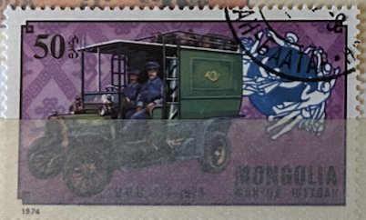
| SOURCE | TITLE| IMAGE MATCH | click to source page |
| www.shutterstock.com | Mongolia Circa 1974 Historic Delivery Vehicle Stock Photo ... | 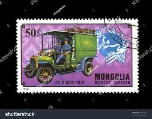 |
| www.alamy.com | Ancient mail coach hi-res stock photography and images ... | 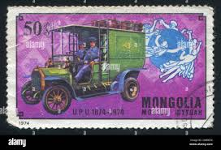 |
| www.osta.ee | 63-8 leiunurk varia autod (247530810) - Osta.ee | 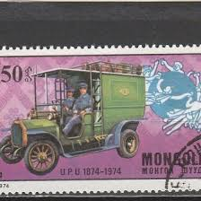 |
| www.istockphoto.com | Singapore Taxi Postage Stamp Stock Photo - Download Image ... | 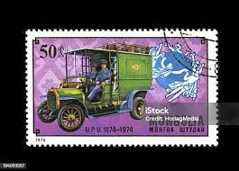 |
| cn.dreamstime.com | 蒙古在邮票上图库摄影片. 图片包括有附注, 外套, 集邮, 博物馆 ... | 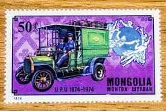 |
| fr.shopping.rakuten.com | Timbre mongolia mongolie u.p.u 1874 1974 | Rakuten | 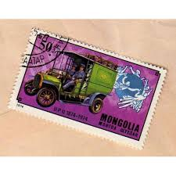 |
| www.alamy.com | History of transport, car Russo Balt (1909), postage stamp ... | 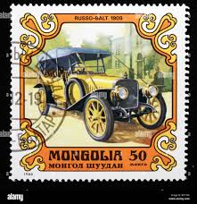 |
| www.mysticstamp.com | 2437 - 1989 25c Traditional Mail Delivery: Automobile ... | 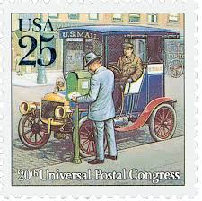 |
| www.ebay.com | Mongolia Bl. 116, Old Cars | eBay | 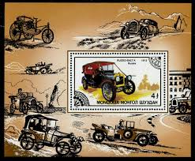 |
| www.shutterstock.com | Mongolia Circa 1980 Postage Stamp Printed Stock Photo ... | 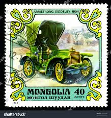 |
| www.istockphoto.com | Historical Antique Auto Postage Stamp Cuban Stock Photo ... | 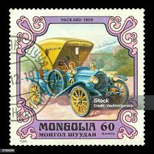 |
| www.ebay.com | Mongolia 824-830,C68, MNH. Michel 909-915, Bl.38. UPU-100 ... | 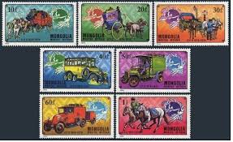 |
| colnect.com | Stamp: Russo-Balt, 1909 (Mongolia(Antique Cars) Mi:MN 1331 ... | 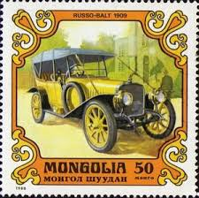 |
| www.allnumis.com | 60 Mongo - Packard 1909, Car - Mongolia - Stamp - 27650 | 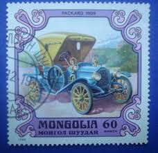 |
| www.mysticstamp.com | 1131 - 1980 Mongolia - Mystic Stamp Company | 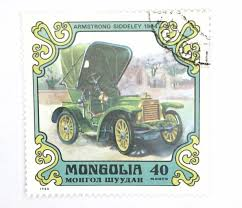 |
| automobile.fandom.com | Russo Baltique | Autopedia | Fandom | 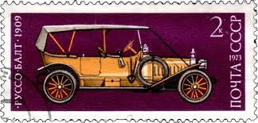 |
| www.nytimes.com | The Watch Industry's Role in Your Speeding Ticket - The New ... | 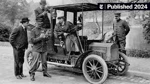 |
| es.123rf.com | MOSCOW, RUSSIA - APRIL 2, 2017: A Post Stamp Printed In ... | 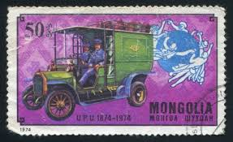 |
| www.scmp.com | Hong Kong unimpressed by arrival of the first motor cars ... | 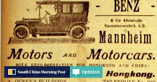 |
| www.facebook.com | Just when you thought you knew it all! Did you know Buick ... | 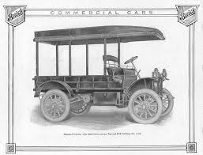 |
| www.ebay.com | 2434-2437, TRADITIONAL MAIL TRANSPORTATION, USPS First Day ... | 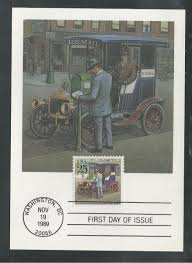 |
| dyler.com | A Unique Approach to Car Design According to Jacques ... | 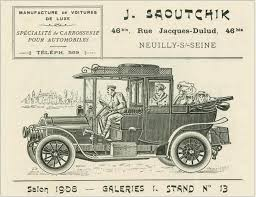 |
| www.team-bhp.com | Stamps featuring Vintage and Classic Cars upto 1975 - Team-BHP | 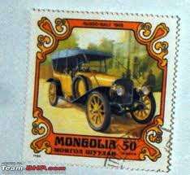 |
| en.wikipedia.org | File:Hearse Delahaye (1906).jpg - Wikipedia | 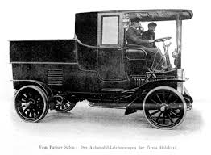 |
| blog.library.si.edu | Delivery Cars: Making the Rounds in the Early 20th Century ... | 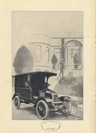 |
| stamps-books.com | Stamps and Books – Stamps-Books | 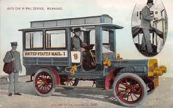 |
| hseqprofessionals.net | ☆外国切手 消印つき 1800シート 機関車 ハンガリー、モンゴル ... | 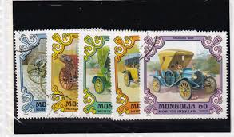 |
| www.unjourdeplusaparis.com | Mme Decourcelle, Paris' first female taxi driver | Un jour ... | 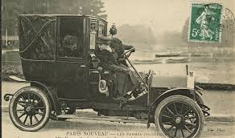 |
| www.istockphoto.com | Mongolia Postage Stamp 1980 Stock Photo - Download Image Now ... | 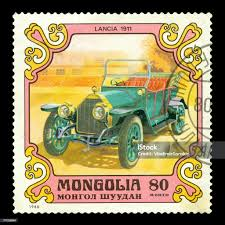 |
| www.shutterstock.com | Ukraine Circa 2017 Postage Stamp Printed Stock Photo ... | 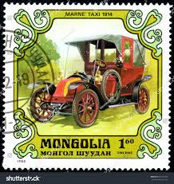 |
| cartercar.org | Cartercar 1911 Models | 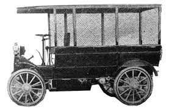 |
| www.arpinphilately.com | Buy Mongolia #1129-1135 - Automobiles - Antique Cars (1980 ... | 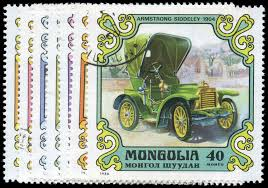 |
| industrialhistory.org | Grout Brothers Automobile - Museum of Our Industrial Heritage | 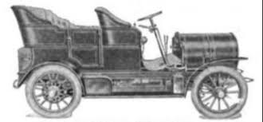 |
| www.hemmings.com | The scoundrel who smooth-talked his way into driving two of ... | 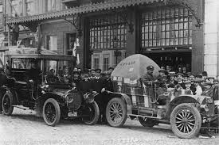 |
| jenikirbyhistory.getarchive.net | 7 Stamps of mongolia, Postal stamps Images: PICRYL - Public ... | 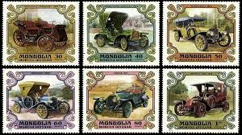 |
| digitalcollections.detroitpubliclibrary.org | 1908 Darracq taxi | DPL DAMS | 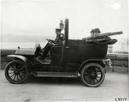 |
| ceautoclassic.eu | 115 Years Ago The Hungarian Auto Industry Was Born ... | 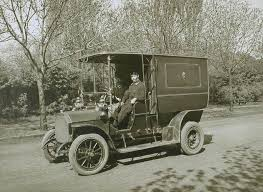 |
| www.gettyimages.com | 29 Photos & High Res Pictures - Getty Images | 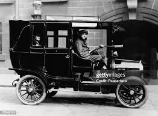 |
| en.todocoleccion.net | p) 1932 mongolia, mongolian revolution green si - Buy ... | 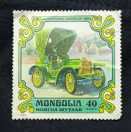 |
| www.chuckstoyland.com | 1908 Archives - Chuck's Toyland | 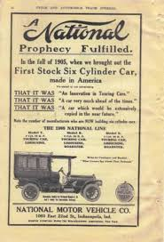 |
| www.facebook.com | Circa 1910 Transport Taxi cab that hailed a new era for ... | 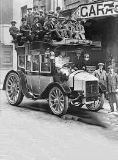 |
| www.alamy.com | 1905 car hi-res stock photography and images - Alamy | 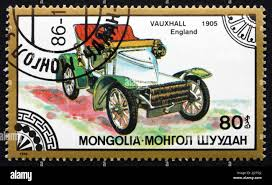 |
| www.historylink.org | Taxi! Seattle's Turbulent Taxicab Industry - HistoryLink.org | 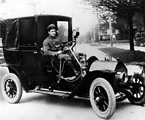 |
| carstyling.ru | Gallery of the American Automobile (1853–1915 ... | 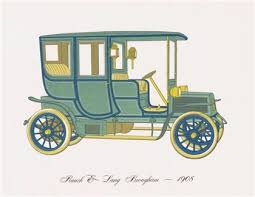 |
| psmag.com | The First Golden Age of Electric Car Advertising - Pacific ... |  |
| www.bridgemanimages.com | Image of Whaling, The Harpooner (chromolitho) by English ... | 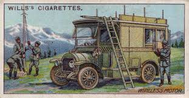 |
| postalmuseum.si.edu | Transporting the Mail | National Postal Museum | 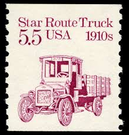 |
| www.atlasobscura.com | Henry Bliss Plaque in Manhattan | Atlas Obscura | 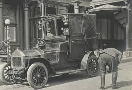 |
| pragaglobal.com | History of the Praga company | PRAGA | 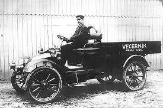 |
| es.dreamstime.com | Camión imagen editorial. Imagen de correo, ruedas, coche ... | |
| www.prewarcar.com | That Amsterdam electric taxi again - PreWarCar | 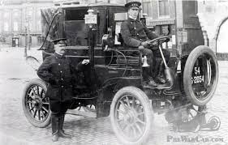 |
| www.drivingline.com | A Very Patriotic Studebaker | DrivingLine | |
| www.prewarbuick.com | Buick Trucks and Commercial Vehicles - PreWarBuick.com | |
| help.bdsbearing.com | NEW DEPARTURE - HYATT | |
| www.virtualsteamcarmuseum.org | Geneva Automobile and Manufacturing Company | |
| carstyling.ru | Peerless Advertising Campaign (1911–1912) - Blog | |
| info.mysticstamp.com | This Day in History | Page 120 of 236 | Mystic Stamp ... | |
| whatsupnewp.com | On This Day In Newport History: Nation's First Jail Sentence ... | |
| www.bridgemanimages.com | Image of A taxi cab in Paris, 1909 (photo) |
.jpg){kind=link}